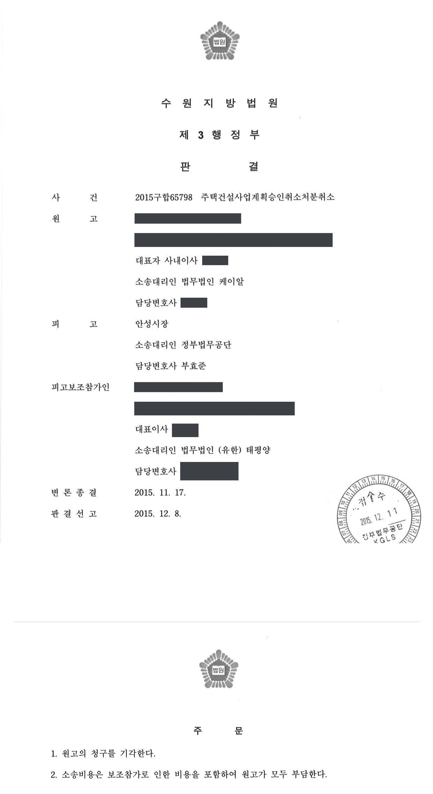
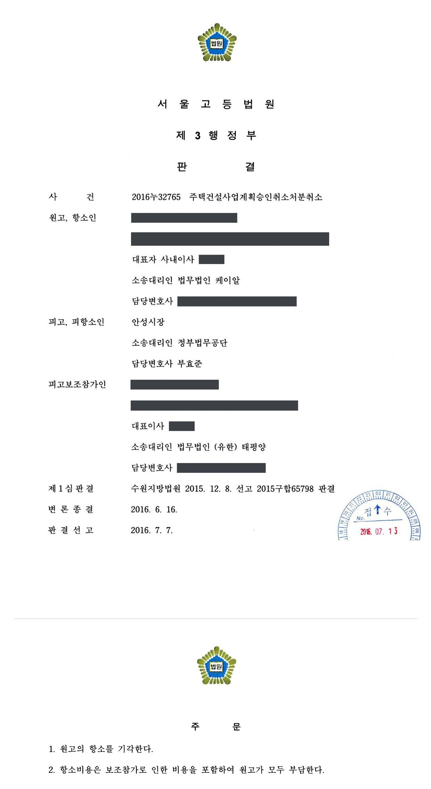
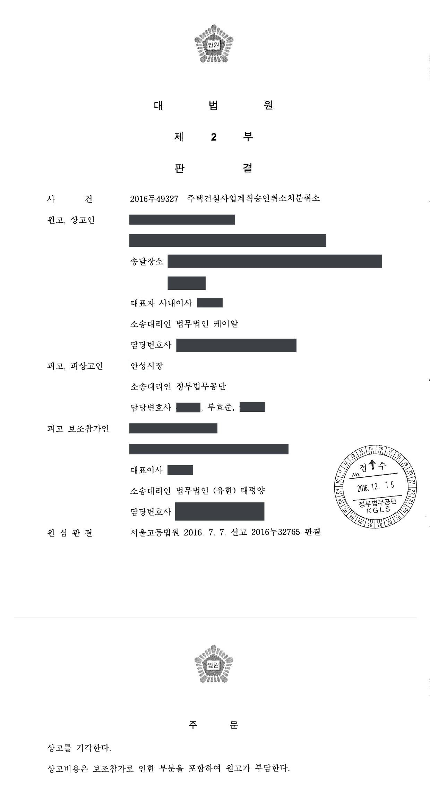

주택건설사업계획 승인 취소처분 취소소송 (1·2·3심)
수원지방법원 2015구합65798 · 서울고등법원 2016누32765 · 대법원 2016두49327 · 담당변호사 부효준
판결문



사건의 요지
장기간 착공하지 않은 아파트 건설사업의 사업계획 승인을 취소한 처분에 관하여, 착공 지연의 정당한 사유 존부와 취소처분의 재량권 일탈·남용 여부가 다투어진 사건입니다. 대법원까지 처분의 적법성이 유지되었습니다.
사건의 주요 내용
원고 회사는 2007년 10월 처분청으로부터 약 33,854㎡의 부지에 524세대 규모의 아파트를 건설하는 주택건설사업계획의 승인을 받았습니다. 그러나 착공은 계속 미루어졌고, 처분청은 원고의 신청에 따라 2009년 10월과 2010년 10월 두 차례 착공시기 연장을 승인하였으며, 2012년 8월에는 세대 규모를 674세대로 늘리고 착공예정일을 2012년 10월로 하는 사업계획 변경을 승인하였습니다. 원고가 주거래은행의 부도에 따른 자금사정 악화를 이유로 다시 연기를 신청하자 2013년 11월 착공시기를 2014년 7월까지로 연장해 주기도 하였습니다.
원고는 2014년 7월 주거래은행의 부도와 사업부지 일부에 대한 공매·경매 절차 진행을 이유로 다시 착공연기를 신청하였으나, 처분청은 이를 승인하지 않고 2014년 9월 사업계획승인 취소를 위한 청문을 실시한 뒤 2015년 4월 초까지 취소를 유예하였습니다. 원고가 유예기간을 3개월 더 연장해 달라고 요청만 하고 공사를 시작하지 않자, 처분청은 2015년 4월 주택건설사업계획승인을 취소하였습니다. 원고는 이 취소처분의 취소를 구하는 소를 제기하였고, 사업부지의 대부분을 매수한 건설회사가 피고 측에 보조참가하였습니다.
부효준 변호사는 1심부터 상고심까지 처분청을 대리하였습니다. 1심은 2015년 12월 원고의 청구를 받아들이지 않았고, 항소심은 2016년 7월 1심 판결의 이유를 그대로 인용하여 항소를 받아들이지 않았으며, 대법원은 2016년 12월 상고심절차에 관한 특례법에 따라 심리불속행 판결로 상고심을 마무리하였습니다.
원고의 주장
- 사업계획승인 이후 주택건설경기가 침체되었고 글로벌 외환위기의 여파로 사업비를 대출한 제2금융권 은행들이 사업부지 일부에 대한 경매·공매를 진행하는 등, 공사를 시작하지 못한 데에 주택법 시행령 제18조 제6호가 정한 정당한 사유가 있었다고 주장하였습니다.
- 약 8년 동안 총 약 345억 원을 투자하였고, 제3자가 사업을 시행하면 과다한 비용과 시간이 들며, 사업을 정상적으로 진행하기 위해 노력해 온 점에 비추어, 취소처분은 공익보다 원고의 사익을 지나치게 제한하여 재량권을 일탈·남용하였다고 주장하였습니다.
부효준 변호사의 주장
- 원고가 여러 차례 착공을 연기하면서도 사업부지의 소유권을 확보하지 못하였고, 오히려 참가인이 사업부지의 88% 이상을 매수하여 원고가 사업을 다시 추진할 수 있을지 매우 불투명하다는 점을 들어 착공 지연에 정당한 사유가 없다고 반박하였습니다.
- 원고가 사업을 정상화하기 위하여 노력하였다고 볼 만한 증거가 없고, 같은 시기에 인접 부지에서 추진된 다른 주택건설사업들은 2010년경 모두 완료되어 입주를 마쳤으며, 장기간 방치된 사업부지를 정리하여 주택의 건설·공급을 관리할 공익상 필요가 크므로 취소처분은 적법하다고 주장하였습니다.
법원의 판단
법원은 구 주택법 제16조 제1항·제9항·제11항과 주택법 시행령 제18조 제6호에 따라, 사업계획승인을 받은 사업주체는 승인받은 날부터 2년 이내에 공사를 시작하여야 하고 승인권자는 공사를 시작하지 않은 사업주체에 대하여 승인을 취소할 수 있으며, 미분양주택 증가 등으로 사업성이 악화될 우려가 있거나 주택건설경기가 침체되는 등 부득이한 사유가 있다고 승인권자가 인정하는 경우에만 1년의 범위에서 착수기간을 연장할 수 있다는 법리를 전제로 하였습니다.
그리고 원고가 2007년 승인 이후 2015년 4월까지 여러 차례 연장을 받았음에도 매번 공사를 시작하지 못한 점, 사업부지 면적의 88% 이상을 참가인이 매수하여 원고가 소유권이나 사용권을 다시 확보할 수 있을지 매우 불투명한 점, 참가인이 그 부지에 주택건설사업을 추진하고 있는 점, 원고가 사업을 다시 시행하기 위하여 노력하고 있다고 볼 만한 자료가 없는 점, 같은 시기에 인접 부지에서 추진된 두 개의 주택건설사업은 2010년경 모두 완료되어 입주를 마친 점을 종합하여, 이 사업이 시행령 제18조 제6호의 착공연기 사유에 해당한다고 볼 수 없다고 판단하였습니다.
재량권 일탈·남용 주장에 대해서는, 공사 규모가 크고 이해관계인이 많은 주택건설사업의 특성과 원고가 입게 될 경제적 손실의 규모를 고려하더라도, 원고에게 자금조달이나 제3자 인수에 필요한 충분한 시간적 여유가 있었음에도 사업을 제대로 추진하지 못하였으므로 기득권이나 신뢰를 보호할 필요성이 크지 않은 반면, 방치된 사업부지에 대한 주택 건설·공급의 관리, 국토의 효율적 이용, 인근 주민의 주거안정 등 처분으로 달성하려는 공익은 크다고 보아 청구를 받아들이지 않았습니다. 이 판단은 항소심과 상고심에서 그대로 유지되었습니다.
구 주택법(2013. 6. 4. 법률 제11871호로 개정되기 전의 것) 제16조 제1항, 제9항, 제11항 및 주택법 시행령 제18조 제6호에 의하면, 일정 규모 이상의 주택건설사업을 시행하고자 그 사업계획승인권자로부터 사업계획의 승인을 받은 사업주체는 승인받은 날부터 2년 이내에 공사를 시작하여야 하고, 사업계획승인권자는 사업주체가 공사를 시작하지 않은 경우에는 그 사업계획의 승인을 취소할 수 있으며, 다만 ‘해당 지역의 미분양주택 증가 등으로 사업성이 악화될 우려가 있거나 주택건설경기가 침체되는 등 공사에 착수하지 못할 부득이한 사유가 있다고 사업계획승인권자가 인정하는 경우’ 등의 사유가 있는 경우 그 사유가 없어진 날부터 1년의 범위에서 공사 착수기간을 연장할 수 있다.
수원지방법원 2015구합65798 판결 이유 ‘2. 다. 판단’ 부분(서울고등법원 2016누32765 판결이 그대로 인용)
따라서 이 사건 사업에 주택법 시행령 제18조 제6호의 착공연기 사유가 있다거나 이 사건 처분이 재량권을 일탈ㆍ남용하였다는 취지의 원고의 위 주장은 이유 없다.
수원지방법원 2015구합65798 판결 이유 ‘2. 다. 판단’ 결론 부분
※ 판결 이유 가운데 이 사건의 판단 기준이 된 부분을 그대로 옮긴 것으로, 당사자 이름 등은 가렸습니다.
이 사건이 보여 주는 것
주택건설사업계획의 승인을 받고도 2년 안에 착공하지 못하면 승인이 취소될 수 있고, 착공연기는 ‘주택건설경기 침체 등 부득이한 사유’를 승인권자가 인정하는 경우에 한하여 허용됩니다. 이 판결은 사업주체 측의 자금난이나 부지 경매와 같은 사정은 그 자체로 정당한 사유가 되지 않으며, 특히 같은 시기 인근 사업장들이 정상적으로 준공되었다면 ‘경기 침체’를 이유로 삼기 어렵다는 점을 보여 줍니다.
또한 수백억 원을 투자하였다는 사정이 있어도, 여러 차례 연장과 청문·유예를 거치며 충분한 시간이 주어졌는데도 부지 소유권을 확보하거나 사업을 정상화하려는 구체적 노력이 확인되지 않으면 기득권이나 신뢰보다 공익이 우선한다고 판단될 수 있습니다. 사업계획승인의 취소를 다투려면 연기 신청 당시의 객관적 사업성 자료와 정상화 노력의 증거를 갖추어 두는 것이 중요합니다.
비슷한 처분을 받으셨다면
행정처분은 처분이 있음을 안 날부터 90일 이내에 행정심판이나 취소소송으로 다투어야 하고, 기간이 지나면 돌이킬 수 없는 처분은 집행정지를 서둘러야 합니다. 처분서를 받은 날짜부터 확인해 드립니다.